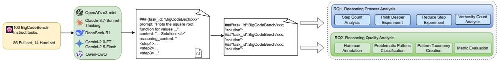

微观深度解读
为您精选了 6 篇高质量 AI 论文的深度解析
#1
大型语言模型
去学习
知识遗忘
推理
上下文干预
简介：本文提出了DRAGON框架，旨在解决大型语言模型（LLM）中有效“去学习”特定知识的挑战。该方法通过引入轻量级检测模块和基于推理的上下文干预，实现在无保留数据的情况下进行知识遗忘，同时保持模型的通用能力。DRAGON在多个实验中表现出色，证明了其高效性和鲁棒性。

#2
对抗性攻击
大语言模型
脆弱性评估
随机森林分类器
安全性机制
简介：本文提出了χmera框架，系统评估大语言模型（LLM）在对抗性中间人攻击下的脆弱性。通过对输入进行微小扰动，显著降低LLM的回答准确性（成功率高达85.3%）。同时，基于响应不确定性训练的随机森林分类器有效区分被攻击和正常查询，平均AUC达到96%，为LLM的安全性提供了初步防护机制。

#3
大型语言模型
信息检索
中间遗忘
位置编码
训练策略
简介：本文探讨了大型语言模型（LLMs）在长上下文中信息检索准确性下降的问题，特别是“中间遗忘”现象。通过实验分析，验证了Gemini 2.5 Flash模型在长上下文中对简单事实问答的卓越性能，显示其能有效克服该现象。研究表明，改进的位置编码和训练策略是提升检索准确性的关键。
图片提取失败：未找到图片
#4
自我抽象
大型语言模型
软件工程
计划引导
政策优化
简介：本文提出了SAGE（Self-Abstraction from Grounded Experience）框架，旨在解决大型语言模型（LLM）代理在软件工程任务中缺乏自我学习和改进能力的问题。SAGE通过“探索-计划抽象-计划增强执行”的循环，使代理从自身经验中提取高层次计划，显著提升了任务执行的性能，尤其在SWE-Bench基准上实现了7.2%的相对提升。

#5
大型语言模型
推理质量
代码生成
评估框架
推理链
简介：本论文提出了一个系统的评估框架，针对大型语言模型（LLMs）在复杂代码生成任务中的推理质量进行深入分析。通过对六种先进LLMs的推理链进行大规模实证研究，识别出“完整性”是主要缺陷，并建立了评估维度（效率、逻辑一致性、完整性）和推理失败模式分类法，为未来的模型改进提供了重要见解。

#6
分布式子模型训练
联邦学习
收敛性
泛化能力
滚动掩码策略
简介：本文提出了一种名为“Rolling Masked FedAvg”的分布式子模型训练框架，旨在解决联邦学习中子模型训练的收敛性和泛化能力问题。通过引入滚动掩码策略，服务器在每轮通信中对模型进行洗牌并分配给客户端，从而提高了训练的稳定性和准确性。实验结果验证了该方法在高数据异构性环境下的优越性能，并提供了首次严格的收敛性分析。